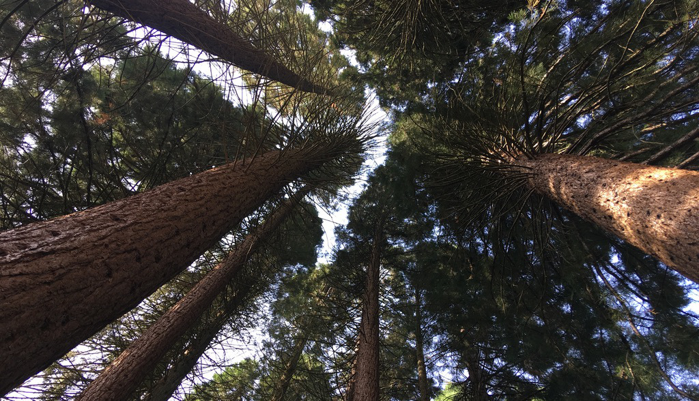
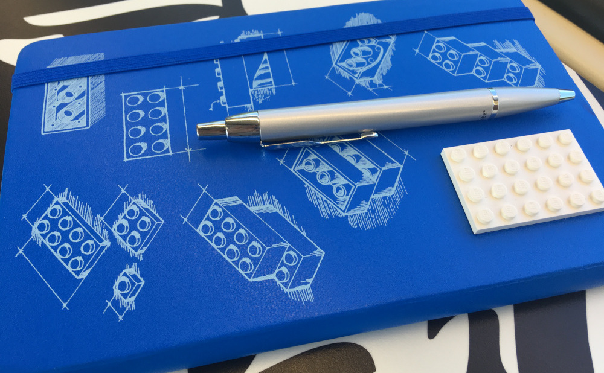
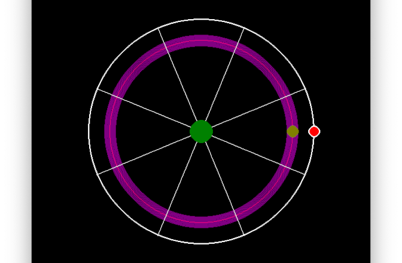
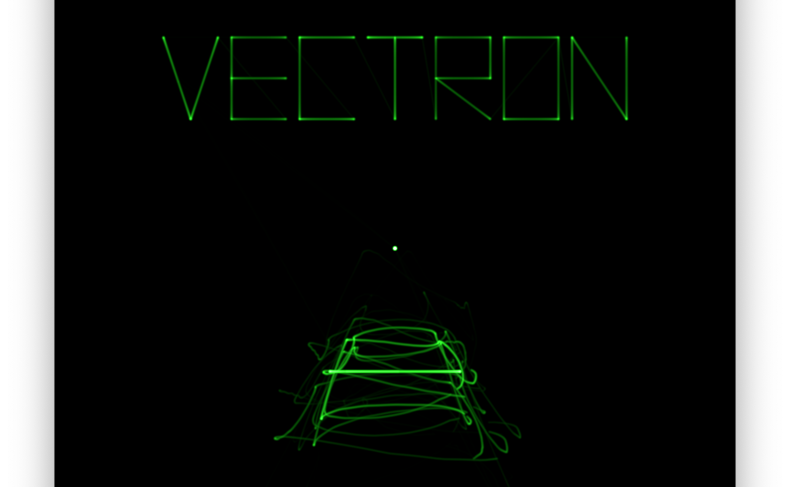

Conceiving my first game made me find out how to be more creative
It's been a while, a whole year to be exact, and a very eventful one. I'd like to share with you some of the things that happened this year, as well as the things I have been working on and that made me shift away my attention from the blog.
My last series of posts a year ago was, among other things, intended to motivate me to build my first game. It was then I realized I was lacking something important. I was struggling to generate ideas that sounded interesting enough to work on.
In search for creativity
I had encountered this problem before. Although I started programming at an early age, I did not have any ideas that would motivate me to become an expert. Many people have asked me for recommendations for getting into programming and I always tell them that making sure they have something interesting to puzzle with, is half the work. For me, these interesting things to work on came while I was a Masters student. After that, programming became a healthy obsession -- programming night and day, every day, for years, improved my programming skills very quickly.
Thus, I kept thinking to myself, 'I have been through this before. If only I can produce a single idea for a game I would like to develop, improving as a game designer will follow naturally. All I need to do is make it my new heatlhy obsession.'. But the ideas weren't flowing...I identified two reasons, I am very picky, but most importantly, my creativity was dormant, it was idling because I ignored it for too long. And so my journey to becoming more creative began.
What I often do when I'm trying to improve myself, is trying to establish the various factors that contribute to certain people being successful at what they do -- learning by imitation is powerful! Doing this already gave me a few clues; my interests had become narrow. When I was still at school I would draw, play the guitar, learn new languages, play with lego, hang out with friends, sport, often all in one day. Of course, I had more free time, I told myself. But that is never a good excuse. Another thing I realized at that time, while thinking how I was more creative when I was young, was that being bored is actually really good for creativity. Thus, I identified two crucial aspects of creativity. The first point is that creativity needs fuel. The more diverse and well-rounded you become, the more connections you will be able to make, relating seemingly unrelated things in unexpected ways. The second point is that you need to listen to your creative voice. For better or for worse the digital age has brought many quality of life improvements, but we have payed the price with our attention (and personal data). We are wired for prioritizing instant gratification. This has become common knowledge by all the companies that are constantly bombarding us with all kinds of stimuli. For every stimulus we react to, we silence our creative voice. Do this long enough and you can completely forget it is there at all.

To better listen to my creative voice, I sought out nature and peaceful places a lot. Nature has a really profound effect on creativity! Without any distractions, you become more focused, your mind wanders. The side-effect was that many of my early game ideas had nature themes. To fuel my creativity I started reading a lot of fiction. Reading Italo Calvino's Invisible Cities under the sun felt like summer love.
After making these changes to my lifestyle, I was starting to generate more ideas, but I could still not find a satisfactory idea to work on. At some point, though, an idea just stuck with me. While I was having my lunch at the park I noticed myself air drumming to rhythm of the music some youngsters were playing. Every human gets this urge to move with the rhythm (I think). From this, an idea for a rhythm based shooter was born. I later realized that it was not very important that the idea was perfect. The idea needed to just be interesting enough to spark further internal discussion and exploration. And that is what I did. While commuting to work, I would scribble ideas for the game on an actual notepad. Putting things down on paper works really well as a way to break the ice between you and your creative self.

My partner played an important role in my search for creativity. She is naturally a very creative person, and she helped me become more open minded. An important lesson I've learned from her is that you really have to pay attention to the world around you, otherwise you'll miss a lot of interesting things. It's not enough to just look, you have to watch. She also gave me the notebook you see above as a gift!
My first game
Having had an idea for a game, I first prototyped my ideas as quickly as I could using the "software rendering code" I introduced in the Space Invaders from Scratch series. The graphics were not pretty as you can see, but it was sufficient for getting a feeling of the gameplay.

Having worked out the basic gameplay, I made some mood boards to help me determine the visual style I'd like to develop. In the end I wanted my game to have a visual style similar to the arcade game, Tempest, or the Vectrex. This led me to doing some research on how the Tempest was programmed, and how the beam in a CRT monitor works and interacts with the phosphors. Then, it was just a matter of time before I discovered the work of Jerobeam Fenderson, who is making music that looks amazing when displayed on an XY oscilloscope. I thus decided to base the design of my game around this concept of the sound driving the graphics of the game and vice-versa.

The game is slowly coming along given my limited free time, especially with my baby daughter under way. Although it is far from finished, I have really enjoyed the journey thus far. It has led me to self-exploration, and getting a better understanding of creativity, and of all the different ways it can be sparked. It also made me realize how much I enjoy the research part of designing a game; in the beginning you only have a vague idea of how the game will look, feel, and play like -- it's an uneasy feeling. But it is by exploring the possibilities and becoming an "expert" in a very special, narrow set of topics, that that concept of the game you had is actualized, as a mirror of that exploration. In a sense, a game is a way of transferring that accumulated knowledge in a very unique way. Not through words, nor pictures, but through play.